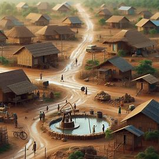
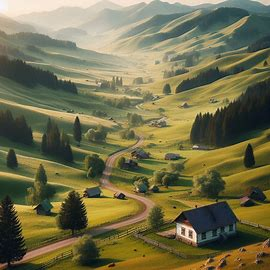
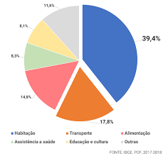
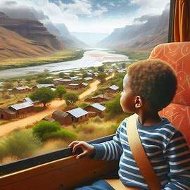

Infraestrutura Limitada
Muitas áreas rurais têm estradas de baixa qualidade, o que dificulta o acesso dos veículos de transporte escolar

Distâncias Longas e Baixa Densidade Populacional
A baixa densidade populacional dificulta a viabilidade econômica de sistemas de transporte público regulares

Custos Financeiros
O financiamento insuficiente afeta a qualidade e a disponibilidade do serviço

Segurança
Estradas sinuosas e condições climáticas adversas tornam o transporte escolar em áreas rurais mais arriscado

Falta de Alternativas
Em muitas áreas rurais, não há opções de transporte público além do transporte escolar